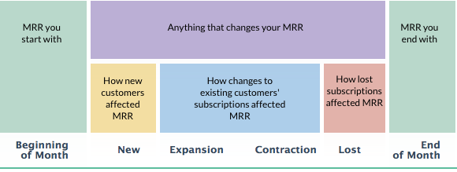

Booking of Capacity-Based Charges
This article explains the principles that FirstOfficer.io uses in booking upgrades and downgrades when Stripe quantities are used.
FirstOfficer.io books the quantities and their effect is shown in Upgrades & Downgrades View.
What Shows Where?
The MRR View visualizes how your MRR changed during the month.
The quantities get booked to the same categories than the subscription MRR and they do not affect subscription counts shown in MRR View.

Any changes in quantities of new customers' subscriptions are booked to New MRR.
Any quantities freed when customer's last subscription ends are booked to Lost MRR.
New MRR View, Lost MRR View and Total MRR View do not show quantity counts. In practice this means that the extra capacity needed to support new customers and the released capacity from lost customers is not visible in FirstOfficer.io at the moment.
Changes in quantity counts for existing subscriptions, but excluding lost subscriptions, are shown in the Upgrades & Downgrades View, which opens when you click expansion or contraction figures.
Examples of Booking Quantities
Let's assume you charge $25/unit/month.
Example 1. A new customer arrives in January 1st and buys 1 unit. Later in January he subscribes for 2 units more.
Booking: MRR of $75 and 3 units is booked to January New MRR category.
Example 2. A customer with 5 units downgrades to using just 2 units
Booking: A quantity decrease of -3 units and -$75 of MRR is booked. Total MRR reported for this customer is $50.
Examples of Booking Quantities when Multiple Plans are used
The principle is that the quantities are kept separate from plan changes. This is necessary to see the true impact of capacity usage changes.
The old plan quantities are reduced to 1 before booking the upgrade. The upgrade/downgrade is done with a quantity of 1 and any additional units are booked as a separate quantity change.
Let's assume Plan 'Hobby' costs $25/unit/month and Plan 'Startup' costs $50/unit/month.
Example 3. A new customer arrives in January 1st and buys 1 unit of Hobby. Later in January he upgrades to Startup, 2 units.
Booking: $100 of New MRR and 2 units is booked to Startup Plan in January.
Example 4. A customer with 4 units ($100) of Hobby upgrades to 3 units ($150) of Startup.
Booking: A quantity decrease of -3 units and -$75 of MRR is booked to Hobby Plan. A MRR contraction of -$25 and -1 subscription is booked to Hobby Plan. An MRR expansion of +$50 and +1 subscription is booked to Startup Plan. A quantity increase of +2 units and +$100 of MRR is booked to Startup Plan. The value of this upgrade was +$25 of MRR. Quantity changes increased the MRR by $25 more.